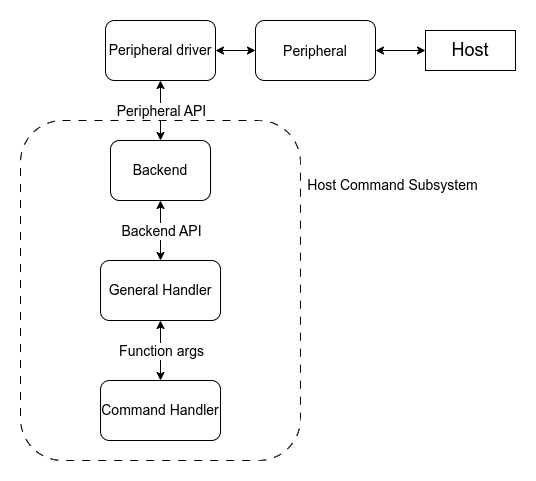
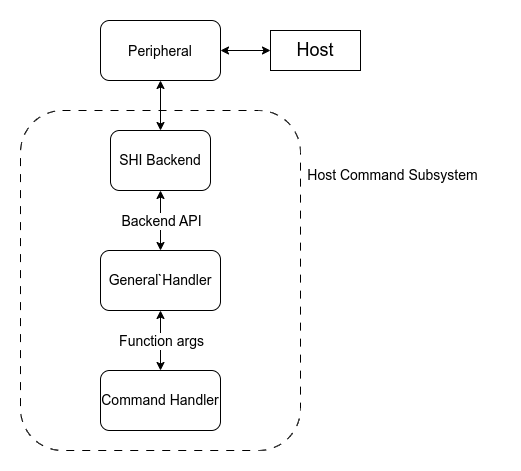

EC 主机命令
概述
主机命令协议定义了主机（即应用处理器）与目标嵌入式控制器（EC）通信的接口。EC 主机命令子系统实现了该协议的目标端，对主机发送的命令生成响应。主机命令协议接口支持多个版本，但本子系统的实现只支持协议版本 3。
架构
主机命令子系统包含以下几个组件：
后端
通用处理程序
命令处理程序
后端是外设驱动与通用处理程序之间的一层，负责通过所选的外设发送和接收命令。
通用处理程序验证来自后端的数据，例如检查大小、校验和等。如果命令有效，并且用户为收到的命令 id 提供了处理程序，就会调用该命令处理程序。

SHI（Serial Host Interface，串行主机接口）与此不同，因为它只用于与主机通信。SHI 本身没有 API，因此后端层和外设驱动层合并为一个后端层。

SPI 是另一种情况。遗憾的是，当前的 SPI API 无法用于处理主机命令通信。主要问题在于主机发送的命令大小未知（SPI 事务发送/接收特定数量的字节），以及需要持续发送状态字节（SPI 模块按事务启用和禁用）。这就迫使 SPI 驱动必须在后端中实现，与 SHI 的做法相同。这意味着必须为每个芯片系列实现一个 SPI 后端。不过，一旦 SPI API 扩展到满足主机命令的需求，这种情况将来可能会改变。请查看 相关讨论。
这种方式需要以特殊方式配置 SPI dts 节点。SPI 节点的主 compatible 字符串改为使用 SPI 驱动的主机命令版本，其余属性照常配置。STM32 的 SPI 节点示例如下：
&spi1 {
/* Change the compatible string to use the Host Command version of the
* STM32 SPI driver
*/
compatible = "st,stm32-spi-host-cmd";
status = "okay";
dmas = <&dma2 3 3 0x38440 0x03>,
<&dma2 0 3 0x38480 0x03>;
dma-names = "tx", "rx";
/* This field is used to point at our CS pin */
cs-gpios = <&gpioa 4 (GPIO_ACTIVE_LOW | GPIO_PULL_UP)>;
};
STM32 SPI 主机命令后端驱动支持 st,stm32h7-spi 和 st,stm32-spi-fifo 变体实现。要启用这些变体，请追加相应的 compatible 字符串。例如，要启用 FIFO 支持并支持 STM32H7 SoC，请按所示修改 compatible 字符串。
&spi1 {
compatible = "st,stm32h7-spi", "st,stm32-spi-fifo", "st,stm32-spi-host-cmd";
...
};
运行 Zephyr 的芯片是 SPI 从机，cs-gpios 属性用于指向 CS 引脚。对于 SPI，需要设置后端 chosen 节点 zephyr,host-cmd-spi-backend。
支持的后端和外设驱动：
模拟器
SHI：ITE 和 NPCX
eSPI：任何支持
CONFIG_ESPI_PERIPHERAL_EC_HOST_CMD和CONFIG_ESPI_PERIPHERAL_CUSTOM_OPCODE的 eSPI 从机驱动UART：任何支持异步 API 的 UART 驱动
SPI：STM32
初始化
如果应用程序配置了以下后端 chosen 节点之一，并且设置了 CONFIG_EC_HOST_CMD_INITIALIZE_AT_BOOT，则相应的后端会通过调用 ec_host_cmd_init() 初始化主机命令子系统：
zephyr,host-cmd-espi-backendzephyr,host-cmd-shi-backendzephyr,host-cmd-uart-backendzephyr,host-cmd-spi-backend
如果没有配置后端 chosen 节点，应用程序必须直接调用 ec_host_cmd_init() 函数。如果需要在运行时根据 GPIO 状态等条件选择后端，这种初始化方式很有用。
缓冲区
主机命令通信需要用于 rx 和 tx 的缓冲区。如果 CONFIG_EC_HOST_CMD_HANDLER_RX_BUFFER_SIZE > 0，则由通用处理程序提供 rx 缓冲区；如果 CONFIG_EC_HOST_CMD_HANDLER_TX_BUFFER_SIZE > 0，则由通用处理程序提供 tx 缓冲区。共享缓冲区对使用多个后端的应用程序很有用，因为每个后端各自定义缓冲区会增加内存占用。不过，某些缓冲区可以由外设驱动（例如 eSPI）定义，应尽可能复用这些缓冲区。
日志
主机命令内置了针对进行中通信的日志系统，有以下几个日志级别：
LOG_INF用于记录新命令的命令 id 以及非成功的响应。同一命令的重复不会被记录LOG_DBG记录每一条命令，包括重复的命令LOG_DBG+CONFIG_EC_HOST_CMD_LOG_DBG_BUFFERS记录每一条命令和响应，以及数据缓冲区
API 参考
- ec_host_cmd_interface